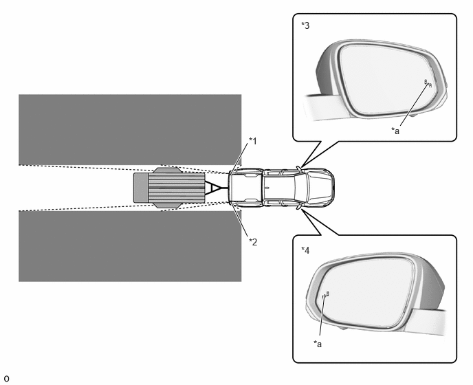
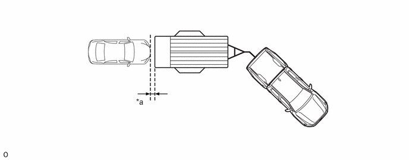

| Last Modified: 10-07-2025 | 6.11:8.1.0 | Doc ID: RM100000002KPOT |
| Model Year Start: 2024 | Model: Tacoma | Prod Date Range: [03/2024 - ] |
| Title: PARK ASSIST / MONITORING: BLIND SPOT MONITOR SYSTEM: GENERAL; 2024 - 2026 MY Tacoma Tacoma HV [03/2024 - ] | ||
GENERAL
OUTLINE
(a) The blind spot monitor system performs 3 functions using the same blind spot monitor sensors: Blind Spot Monitor (BSM) function, Rear Cross Traffic Alert (RCTA) function* and Trailer Blind Spot Monitor (TBSM) function.
(b) The BSM function and RCTA function* can be enabled or disabled from the setting tab of the multi-information display.
(c) The blind spot monitor system consists of the 2 blind spot monitor sensors, steering sensor, airbag ECU, outer rear view mirror assembly LH and RH, RCTA buzzer (meter buzzer)*, combination meter assembly and trailer brake control ECU etc.
(d) The BSM function uses sensors to detect vehicles that are in or rapidly approaching the vehicle's blind spot, helping the driver to confirm safety when changing lanes.
- *: Models with RCTA function
|
*1 |
Blind Spot Monitor Sensor LH |
*2 |
Blind Spot Monitor Sensor RH |
|
*3 |
Outer Rear View Mirror Assembly LH |
*4 |
Outer Rear View Mirror Assembly RH |
|
*a |
Outer Rear View Mirror Indicator Light |
- |
- |
 |
Detection Area (for Vehicle in Blind Spot) |
 |
Detection Area (for Rapidly Approaching Vehicle from Behind) |
(e) If the RCTA function detects a vehicle approaching from the right or left at the rear of the vehicle while the driver is reversing in a parking lot, the function alerts the driver by sounding the RCTA buzzer and flashing the outer rear view mirror indicator light to provide information for the driver, supporting decision making.*
- *: Models with RCTA function
|
*a |
This Vehicle |
*b |
Target Vehicle |
|
Detection Area |
- |
- |
HINT:
In this section, the expression "this vehicle" is used to refer to the vehicle equipped with this blind spot monitor system.
(f) The Trailer Blind Spot Monitor (TBSM) function is composed of 3 functions: Trailer Merge Warning (TMW), Auto Trailer Detection (ATD) and Trailer Length Detection (TLD). TMW is a function that expands the BSM detection area based on the length of the trailer. It uses the same means of notifying the driver as BSM. ATD is a function that automatically detects the trailer connection status. TLD is a function that automatically estimates the trailer length and adjusts the BSM detection area.
|
*1 |
Blind Spot Monitor Sensor LH |
*2 |
Blind Spot Monitor Sensor RH |
|
*3 |
Outer Rear View Mirror Assembly LH |
*4 |
Outer Rear View Mirror Assembly RH |
|
*a |
Outer Rear View Mirror Indicator Light |
- |
- |
|
Detection Area (for Vehicle in Blind Spot) |
- |
- |
PRECAUTION
(a) Cautions regarding the use of the system
(1) The driver is solely responsible for safe driving. Always drive safely, taking care to observe your surroundings.
(2) The BSM function is a supplementary function which alerts the driver that a vehicle is in a blind spot of the outside rear view mirrors or is approaching rapidly from behind into a blind spot. Do not overly rely on the BSM function. As the function cannot judge if it is safe to change lanes, over-reliance could lead to an accident resulting in death or serious injury. As the system may not function correctly under certain conditions, the driver's own visual confirmation of safety is necessary.
(3) The RCTA function is only a supplementary function which alerts the driver that a vehicle is approaching from the right or left at the rear of the vehicle. As the RCTA function may not function correctly under certain conditions, the driver's own visual confirmation of safety is necessary. Over-reliance on this function may lead to an accident resulting in death or serious injury.*
- *: Models with RCTA function
(4) The TMW function is a supplementary function which alerts the driver that a vehicle is in a blind spot of the outside rear view mirrors or is approaching rapidly from behind into a blind spot. Do not overly rely on the BSM function. As the function cannot judge if it is safe to change lanes, over-reliance could lead to an accident resulting in death or serious injury. The TMW function may not operate normally, depending on the trailer type or trailer length.
(5) The Auto Trailer Detection (ATD) function uses the trailer brake control ECU or blind spot monitor sensor to automatically detect whether a trailer is connected to the vehicle. Trailer detection vis blind spot monitor sensors may be delayed if the vehicle is in a crowded environment such as busy parking lot, area surrounded with trees (camping ground) or in an environment with objects in the immediate environment that prevent sensors from sufficiently detecting the trailer.
(6) The TLD function automatically or manually detects the trailer length and adjusts the BSM detection area. If the vehicle is towing a trailer and a detectable vehicle follows at a distance of approximately 1.0 m (3.28 ft.) behind the trailer, the length may be detected as the total of the length of the trailer and the length of the vehicle towing the trailer.
|
*a |
Approximately 1.0m (3.28 ft.) |
- |
- |
(b) Outside rear view mirror indicator visibility
(1) In strong sunlight, the outside rear view mirror indicator may be difficult to see.
(c) Hearing the RCTA buzzer (Models with RCTA function)
(1) The RCTA buzzer may be difficult to hear over loud noises such as when the audio system volume is high.
(d) The BSM function is not designed to detect the following types of vehicles and/or objects:
(1) Small motorcycles, bicycles, pedestrians, etc.*
(2) Vehicles traveling in the opposite direction.
(3) Guardrails, walls, signs, parked vehicles and similar stationary objects.*
(4) Following vehicles that are in the same lane.*
(5) Vehicles traveling 2 lanes away from this vehicle.*
(6) Vehicles which are being overtaken rapidly by this vehicle.*
*: Depending on conditions, detection of a vehicle and/or object may occur.
HINT:
In this section, the expression "this vehicle" is used to refer to the vehicle equipped with this blind spot monitor system.
(e) The BSM function may not detect vehicles correctly in the following situations:
(1) When the sensor is misaligned due to a strong impact to the sensor or its surrounding area.
(2) When mud, snow, ice, a sticker, etc. is covering the sensor or surrounding area on the rear bumper.
(3) When driving on a road surface that is wet with standing water during bad weather such as heavy rain, snow, or fog.
(4) When multiple vehicles are approaching with only a small gap between each vehicle.
(5) When the distance between this vehicle and a following vehicle is short.
(6) When there is a significant difference in speed between this vehicle and the vehicle that enters the detection area.
(7) When the difference in speed between this vehicle and another vehicle is changing.
(8) When a vehicle enters a detection area traveling at approximately the same speed as this vehicle.
(9) As this vehicle starts from a stop, a vehicle remains in the detection area.
(10) When driving up and down consecutive steep inclines, such as hills, dips in the road, etc.
(11) When driving on roads with sharp bends, consecutive curves, or uneven surfaces.
(12) When vehicle lanes are wide, or when driving on the edge of a lane, and the vehicle in an adjacent lane is far away from this vehicle.
(13) When an accessory (such as a bicycle carrier) or towing eyelet is installed to the rear of the vehicle.
(14) When there is a significant difference in height between this vehicle and the vehicle that enters the detection area.
(15) Immediately after the blind spot monitor system is turned on.
(16) When your vehicle is towing a trailer.
HINT:
In this section, the expression "this vehicle" is used to refer to the vehicle equipped with this blind spot monitor system.
(f) Instances of the BSM function unnecessarily detecting a vehicle and/or object may increase under the following situations:
(1) When the sensor is misaligned due to a strong impact to the sensor or its surrounding area.
(2) When the distance between this vehicle and a guardrail, wall, etc. that enters the detection area is short.
(3) When driving up and down consecutive steep inclines, such as hills, dips in the road, etc.
(4) When vehicle lanes are narrow, or when driving on the edge of a lane, and a vehicle traveling in a lane other than the adjacent lanes enters the detection area.
(5) When driving on roads with sharp bends, consecutive curves, or uneven surfaces.
(6) When the tires are slipping or spinning.
(7) When the distance between this vehicle and a following vehicle is short.
(8) When an accessory (such as a bicycle carrier) or towing eyelet is installed to the rear of the vehicle.
HINT:
In this section, the expression "this vehicle" is used to refer to the vehicle equipped with this blind spot monitor system.
(g) The RCTA function is not designed to detect the following types of vehicles or objects: (Models with RCTA function)
(1) Vehicles approaching from directly behind.
(2) Vehicles backing up in a parking space next to this vehicle.
(3) Vehicles that the sensors cannot detect due to obstructions.
(4) Guardrails, walls, signs, parked vehicles and similar stationary objects.*
(5) Small motorcycles, bicycles, pedestrians, etc.*
(6) Vehicles moving away from this vehicle.
(7) Vehicles approaching from the parking spaces next to this vehicle.*
*: Depending on conditions, detection of a vehicle and/or object may occur.
HINT:
In this section, the expression "this vehicle" is used to refer to the vehicle equipped with this blind spot monitor system.
(h) The RCTA function may not detect vehicles correctly in the following situations: (Models with RCTA function)
(1) When the sensor is misaligned due to a strong impact to the sensor or its surrounding area.
(2) When mud, snow, ice, a sticker, etc. is covering the sensor or surrounding area on the rear bumper.
(3) When driving on a road surface that is wet with standing water during bad weather such as heavy rain, snow, or fog.
(4) When multiple vehicles are approaching with only a small gap between each vehicle.
(5) When a vehicle is approaching at high speed.
(6) When backing up on a slope with a sharp change in grade.
(7) When backing out of a shallow angle parking spot.
(8) Immediately after the blind spot monitor system is turned on.
(9) Immediately after the engine is started with the blind spot monitor system on.*1
(10) Immediately after starting the hybrid system when the blind spot monitor system on.*2
(11) When the sensors cannot detect a vehicle due to obstructions.
HINT:
*1: Gasoline models
*2: HEV models
(i) Instances of the RCTA function unnecessarily detecting a vehicle and/or object may increase under the following conditions: (Models with RCTA function)
(1) When a vehicle passes by the side of this vehicle.
(2) When the parking space faces a street and vehicles are being driven on the street.
(3) When the distance between this vehicle and metal objects, such as a guardrail, wall, sign, or parked vehicle, which may reflect electrical waves toward the rear of the vehicle, is short.
HINT:
In this section, the expression "this vehicle" is used to refer to the vehicle equipped with this blind spot monitor system.
(j) The TBSM function may not detect vehicles correctly in the following situations:
(1) When a detectable vehicle moves from 2 lanes away from the vehicle to the adjacent lane and enters the front end of the sensor detection area.
(2) When a detectable vehicle enters the sensor detection area at a speed of less than approximately 16 km/h (10mph) (the minimum operation speed of BSM).
(3) When a detectable vehicle enters the front end of the sensor detection area and maintains the same speed as the vehicle.
(4) When a detectable vehicle travels at a speed of approximately 16 km/h (10mph).
(5) When the vehicle turns at an intersection and then a detectable vehicle drives straight ahead in the intersection but does not turn with the vehicle.
(6) When the vehicle starts off while there is a stationary vehicle in the sensor detection area.
(7) When a detectable vehicle in an adjacent lane passes the vehicle, and the driver's own vehicle changes lanes to the lane on the opposite side.
(k) Instances of the TBSM function unnecessarily detecting a vehicle and/or object may increase under the following conditions
(1) When a stationary object, parked or stopped vehicle, etc. is in the sensor detection area, and the vehicle is towing a large trailer such as an Recreational Vehicle (RV) or box trailer.
(l) Blind spot monitor sensors are installed inside the left and right side of the vehicle rear bumper respectively. Observe the following to ensure the blind spot monitor system can function correctly.
(1) Keep the sensors and the surrounding areas on the rear bumper clean at all times.
(2) Do not subject a sensor or its surrounding area on the rear bumper to a strong impact. If a sensor is moved even slightly off position, the system may malfunction and vehicles may not be detected correctly.
- A sensor or its surrounding area is subject to a strong impact.
- If the surrounding area of a sensor is scratched or dented, or part of them has become disconnected.
(3) Do not disassemble the sensor.
(4) Do not attach stickers to the sensor or surrounding area on the rear bumper.
(5) Do not modify the sensor or surrounding area on the rear bumper.
(6) Do not paint the rear bumper any color other than an official Toyota color.